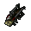
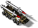
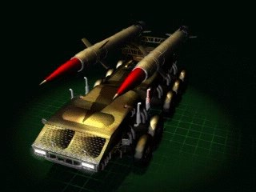

S.D.R.



Панель информации в игре
- Скорость:
- 80 км/ч
- Энергия (HP):
- 225
- Обзор:
- 500 м
- Время производства:
- 61 с
| Оружие | Мощь | Дальность | Цели |
|---|---|---|---|
| Ракета Гамма | 350 | 5-25 | З |
Затраты: Экстракт 4200 Железо 3000 Уголь 2400 Титан 1500
Описание
Эта самоходная ракетная пушка - современный вариант дальнобойной артиллерии, применявшейся в земных войнах. Благодаря использованию автономного источника питания ионного двигателя может действовать на неограниченной территории. Оснащен баллистическими ракетами класса Гамма, способен поражать цели за пределами видимости. Чрезвычайно полезен при уничтожении вражеских сил, обнаруженных разведкой, однако, совершенно беспомощен против вражеской пехоты и быстрых бронемашин. Требует постоянной защиты от наземных и воздушных атак, или же хорошей маскировки на поле.
Связанное
- Требует
- Пионер, Мега-Фабрика, S.D.R.
- Исследуется проектом
- S.D.R.
- Производится в
- Мега-Фабрика
- Перевозится в
- Гэлэкси S9
- Оружие
- Ракета Гамма (slot 0)
- Улучшается проектом
- Kерамические Гусеницы
Параметры конфигурации, которых нет в игре (8)
HUMAN- 2
TRACE- 1
AILEVEL- 3
TURN_SPEED- 0.02
AIUNIT- AIUNIT_ARTILERY
SOLDIER_TYPE- SOLDIERTYPE_UNKNOWN
INDEPENDENT- nigdy
TYPE- R_hPOJAZD